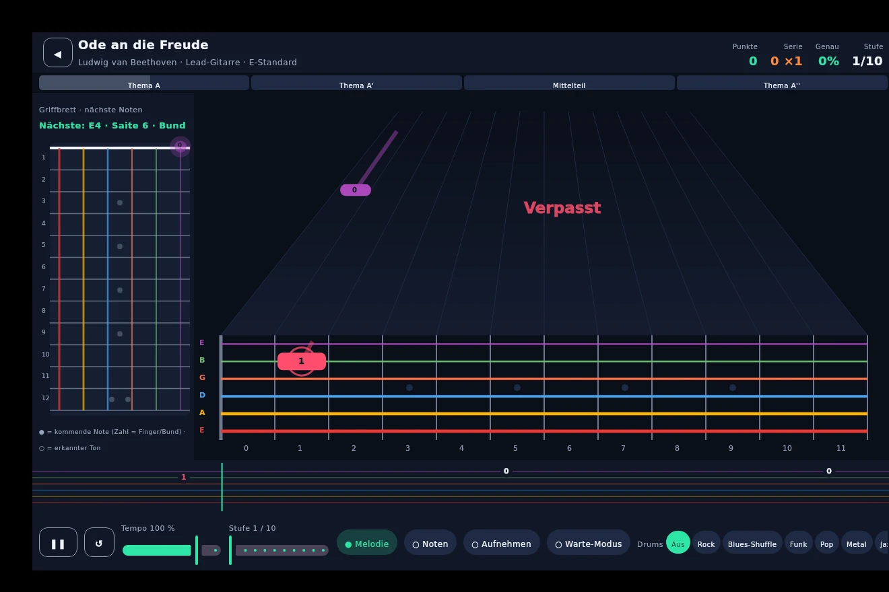

Du spielst.
Riff hört zu.
Spiele Songs auf Gitarre, Bass, Klavier oder Ukulele. Riff zeigt dir beim Spielen, ob du den richtigen Ton zur richtigen Zeit triffst.
Spielansichten entdeckenSo sieht Üben aus.

Dein Einstieg.
Wie schließe ich mein Instrument an?
Für Gitarre und Ukulele reicht das Gerätemikrofon. E-Gitarre und Bass lassen sich über ein USB-Audio-Interface anschließen. Ein Keyboard kann MIDI über USB oder Bluetooth senden.
Wie übe ich schwierige Stellen?
Mit Riff Repeater spielst du einen Abschnitt in Schleife bei 25 bis 125 % Tempo. Im Warte-Modus geht der Song erst weiter, wenn du den richtigen Ton triffst.
Was ist kostenlos?
Drei Songs, die ersten drei Lektionen jedes Kurses, ein Minispiel, Jam-Band, Stimmgerät, Metronom, Akkorde und Tonleitern. Der volle Umfang ist als Einmalkauf oder mit dem optionalen Riff-Plus-Abo vorgesehen.
Auf welchen Geräten läuft Riff?
Riff 1.2.0 wird für Windows und Android entwickelt. Handy und Tablet unterstützen Hoch- und Querformat. Die App-Ansichten auf dieser Seite stammen aus dem Desktop-Build.